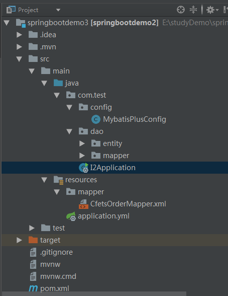

0.springboot项目结构规范

1.注解扫描：
springboot默认的扫描包是xxxApplication那个启动类所在的包，是那个类上面的第一层包内的所有内容。可以通过
@ComponentScan(basePackages={"com.example.xxx","com.example.xxx2"})
来指定启动时扫描的包为xxx，此时将不再默认扫描xxxApplication启动类所在包，扫描的路径应从com.example下开始
使用@Data注解（lomok），自动生成getset等方法，但是@Data注解并不能起到实例化类的作用
需添加依赖：
<dependency>
<groupId>org.projectlombok</groupId>
<artifactId>lombok</artifactId>
<version>1.16.10</version>
</dependency>
2.返回视图：
控制层中如果不返回视图（页面），那么应该使用@RestController而不是@Controller
3.通过application.properties配置：
server.port=8000 修改tomcat端口为8000
server.servlet.context-path=/springbootdemo
修改项目访问路径加入springbootdemo，例如http:localhost:80000/springbootdemo
logging.level.root=debug 修改项目日志输出级别为debug，默认为INFO级别
配置的数据可以通过在bean字段上加入@Value("${server.port}")，为bean字段设置启动后的默认值
4.日志基本配置：
springboot自带slf4j，Logback日志，同时默认输出info级别的日志，如果需要输出文件或者更改日志输出级别，则可以在application.properties中进行配置
logging.file= F:/mylog/log.log
实测，日志的地址和文件名要表示在一起，已踩坑，下面这样的配置无法生成对应的日志文件
#logging.path= F:/mylog
#logging.file= log.log
4.通过application.yaml配置：
添加使用properties.yaml的依赖
<dependency>
<groupId>org.yaml</groupId>
<artifactId>snakeyaml</artifactId>
<version>1.18</version>
</dependency>
可以通过@ConfigurationProperties( prefix="xxx")来为类添加属性值。
例如properties.yaml文件中配置了：
xxx:
name: firstFly
port: 66666
num: 100
就会在springboot启动后自动向类的name，port，num属性（存在的前提下）附上指定值。
5.通过@Value进行注解
@Value("xxx")
@Value("${configname}") //用来读取properties配置文件的内容，注意配置文件中配置的key值不要与自带的名称重复，否则会报错
用在类的属性上，当这个类被扫描实例化的时候，value中的值会自动赋给此属性
5.html文件
html默认放在static目录下，如果放在template下将无法访问到
6.更改banner，在resources目录下建一个文件banner.txt然后把要展示的启动图案粘贴过去就可以了。